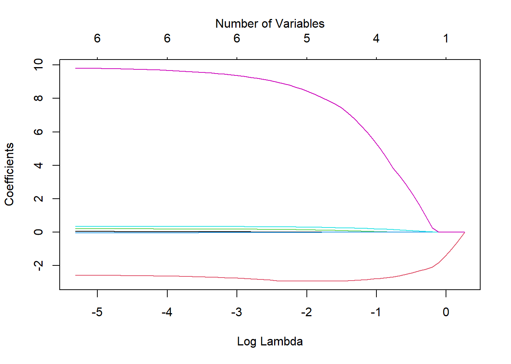

10.4 Variable Selection Process
Ref: PMA6 CH 9
Variable selection methods such as the ones described in this section, are most often used when performing an Exploratory analysis, where many independent variables have been measured, but a final model to explain the variability of a dependent variable has not yet been determined.
When building a model, we want to choose a set of independent variables that both will yield a good prediction using as few variables as possible (parsimony). We also need to consider controlling for moderators and confounders. In many situations where regression is used, the investigator has strong justification for including certain variables in the model.
- previous studies
- accepted theory
The investigator may have prior justification for using certain variables but may be open to suggestions for the remaining variables.
The set of independent variables can be broken down into logical subsets
- Factors of primary interest. (such as an exposure or treatment)
- Potential confounders. These are measures that could be associated with both the response, and explanatory variables, and which could explain the relationship between the primary factor of interest and the outcome. These are typically a set of demographics such as age, gender, ethnicity, and tend to be factors found to be important in prior studies.
- Effect Modifiers (Moderators). A set of variables that other studies have shown to change or affect the relationship between the explanatory and response variables.
- Precision variables (covariates). Variables associated with the dependent variable, but not the primary factor of interest.
How variables are chosen for inclusion into a model is heavily driven by the purpose of the model:
- descriptive
- predictive
10.4.1 Automated selection procedures
Forward selection: Variables are added one at a time until optimal model reached.
- Choose the variable with the highest absolute correlation \(\mid r \mid\) with the outcome.
- Choose the next variable that maximizes the model adjusted \(R^{2}\).
- Repeat until adding additional variables does not improve the model fit significantly.
Backward elimination: Variables are removed one at a time until optimal model reached
- Put all variables into the model.
- Remove the least useful variable in the model. This can be done by choosing the variable with the largest \(p\)-value.
- Repeat until removing additional variables reduces the model fit significantly.
Stepwise selection: Combination of forward and backward.
- Start with no variables (just \(\bar{Y}\))
- Add the variable that results in the greatest improvement in model fit.
- Add another variable that results in the greatest improvement in model fit after controlling for the first.
- Check to see if removing any variable currently in the model improves the fit.
- Add another variable…
- Check to remove variables…
- Repeat until no variables can be added or removed.
Most programs have the option to force variables to be included in the model. This is important in cases where there is a primary factor of interest such as a treatment effect.
“… perhaps the most serious source of error lies in letting statistical procedures make decisions for you.” “Don’t be too quick to turn on the computer. Bypassing the brain to compute by reflex is a sure recipe for disaster.” Good and Hardin, Common Errors in Statistics (and How to Avoid Them), p. 3, p. 152
Warnings:
- Stopping criteria and algorithm can be different for different software programs.
- Can reject perfectly plausible models from later consideration
- Hides relationships between variables (X3 is added and now X1 is no longer significant. X1 vs X3 should be looked at)
Best Subsets
- Select one X with highest simple \(r\) with Y
- Select two X’s with highest multiple \(r\) with Y
- Select three X’s with highest multiple \(r\) with Y etc.
- Compute adjusted R2, AIC or BIC each time.
- Compare and choose among the “best subsets” of various sizes.
10.4.2 Implementation of stepwise selection in R
- Jupyter notebook (R kernel) Stats 191 at Stanford. This one uses cross-validation on the stepwise procedures, and demonstrates the dangers of trusting models that come out of blind use of variable selection methods. https://web.stanford.edu/class/stats191/notebooks/Selection.html
- Best Subsets from STDHA: http://www.sthda.com/english/articles/37-model-selection-essentials-in-r/155-best-subsets-regression-essentials-in-r/
10.4.3 LASSO Regression (PMA6 9.7)
Least Absolute Shrinkage and Selection Operator.
The goal of LASSO is to minimize
\[ RSS + \lambda \sum_{j}\mid \beta_{j} \ \mid \]
where \(\lambda\) is a model complexity penalty parameter.
- “Shrinks” the coefficients, setting some to exactly 0.
- Thus essentially choosing a simpler model
- Balances model accuracy with interpretation.
The lasso fits many regression models and selects those variables that show the strongest association with the response variable using the data at hand. This is also described as a method of selective inference (Taylor and Tibshirani, 2015) and is an example of exploratory research, where the data may influence what type and how many analyses are performed.
10.4.3.1 Example
glmnet package, and the Chemical data set from PMA6. Also it uses the model.matrix function from the stats package (automatically loaded). This function takes a set of input predictors and turns them into the variables that are used directly in the model. For example, categorical variables will be converted into multiple binary indicators. This typically happens in the background.
The glmnet function works best when the outcome y and predictors x are not contained within a data frame. The alpha argument is the tuning parameter, where a value of 1 specifies the lasso.
library(glmnet)
chem <- read.table("data/Chemical.txt", header = TRUE)
y <- chem$PE
x <- model.matrix(PE~., chem)[,-1] # the -1 drops the intercept
chem.lasso <- glmnet(x, y, alpha = 1)We can visualize the effect of the coefficient shrinkage using the following plot.
plot(chem.lasso, xvar = "lambda")
mtext(side=3, "Number of Variables", line=2)
- Each line represents the value of a coefficient as \(ln(\lambda)\) changes.
- The red line on the bottom and the purple on the top must be important, since they are the last two to be shrunk to 0 and they are relatively stable.
Examining the coefficients of the chem.lasso model object gives us a very large matrix (7x61), listing the coefficients for each value of \(\lambda\) that was tried. A sample of columns are shown below:
coef(chem.lasso)[,1:8]
## 7 x 8 sparse Matrix of class "dgCMatrix"
## s0 s1 s2 s3 s4 s5
## (Intercept) 9.366667 9.5835968 9.7812554 9.961355 10.12545 10.0399324
## ROR5 . . . . . .
## DE . -0.5206322 -0.9950129 -1.427251 -1.82109 -2.0903355
## SALESGR5 . . . . . .
## EPS5 . . . . . .
## NPM1 . . . . . 0.0157436
## PAYOUTR1 . . . . . 0.2427377
## s6 s7
## (Intercept) 9.59940208 9.19800729
## ROR5 . .
## DE -2.21050375 -2.31999666
## SALESGR5 . .
## EPS5 . .
## NPM1 0.04642112 0.07437333
## PAYOUTR1 0.98609790 1.66341998
coef(chem.lasso)[,56:60]
## 7 x 5 sparse Matrix of class "dgCMatrix"
## s55 s56 s57 s58 s59
## (Intercept) 1.36957827 1.35834023 1.34802448 1.34099610 1.33052382
## ROR5 0.03767492 0.03797214 0.03825501 0.03840313 0.03870172
## DE -2.58475249 -2.58199893 -2.57937377 -2.57863116 -2.57530747
## SALESGR5 0.19961031 0.19990639 0.20017553 0.20039468 0.20064382
## EPS5 -0.03468051 -0.03483069 -0.03497088 -0.03507850 -0.03520342
## NPM1 0.34740236 0.34760738 0.34778861 0.34795977 0.34812027
## PAYOUTR1 9.78594052 9.79286717 9.79910767 9.80408094 9.81009965Comparing the plot to the coefficient model output above, we see that the variables that show up being shrunk last are DE and PAYOUTR1.
Using Cross validation to find minimum lambda
Cross-validation is a resampling method that uses different portions of the data to test and train a model on different iterations Wikipedia.
By applying a cross-validation technique, we can identify the specific value for \(\lambda\) that results in the lowest cross-validated Mean Squared Error (MSE) (\(\lambda_{min}\)). To ensure reproducibility of these results we set a seed for the random number generator prior to analysis.
set.seed(123) # Setting a seed to ensure I get the same results each time I knit
cv.lasso <- cv.glmnet(x, y, alpha = 1) # note change in function
# Fit the final model using the min lambda
model <- glmnet(x, y, alpha = 1, lambda = cv.lasso$lambda.min)The resulting table of shrunk regression coefficients then is;
coef(model)
## 7 x 1 sparse Matrix of class "dgCMatrix"
## s0
## (Intercept) 2.645693621
## ROR5 0.004833458
## DE -2.882636490
## SALESGR5 0.165581782
## EPS5 -0.017771193
## NPM1 0.323497141
## PAYOUTR1 8.986481946In this case we would keep variables: DE, SALESGR5, NPM1 and PAYOUTR1. Estimates for ROR5 and EPS56 are very small, and so can be reasonably excluded.
- The lasso procedure normalizes the data prior to fitting a model, so the coefficient values that are returned cannot be interpreted directly in context of the problem.
- This does allow us the ability to make “judgement” calls on what is a ‘small’ estimate since it’s no longer dependent on the units of the data.
- Appropriate inference after model selection is currently under research. No unifying theory exists yet.
- For now, use lasso to choose variables, then fit a model with only those selected variables in the final model.
- Variables chosen in this manner are important, yet biased estimates.
lm(PE ~ DE + SALESGR5 + NPM1 + PAYOUTR1, data = chem) |> tbl_regression()| Characteristic | Beta | 95% CI1 | p-value |
|---|---|---|---|
| DE | -3.2 | -6.9, 0.58 | 0.094 |
| SALESGR5 | 0.19 | -0.02, 0.41 | 0.077 |
| NPM1 | 0.35 | 0.12, 0.59 | 0.005 |
| PAYOUTR1 | 11 | 4.7, 17 | 0.001 |
| 1 CI = Confidence Interval | |||
10.4.3.2 Ridge Regression (PMA6 10.6)
Often compared to LASSO, Ridge regression also minimizes the RSS, but the penalty function is different: \[ RSS + \lambda \sum_{j} \beta_{j}^2 \]
Ridge regression only shrinks the magnitude of the coefficients, not set them exactly to zero.